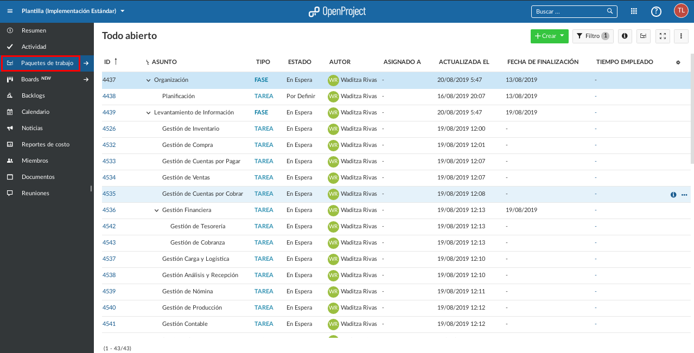
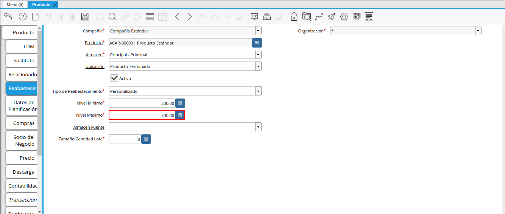

Registro de Producto¶
En el menú de ADempiere, ubique y seleccione la carpeta “Gestión de Materiales”, luego seleccione la carpeta “Reglas de Gestión de Materiales” y finalmente seleccione la ventana “Producto”, adjunto imagen para referencia.
Imagen 1. Menú de ADempiere
En esta ventana se registran los datos principales que la empresa requiere conocer de los productos, con la finalidad de ser utilizada al momento de realizar alguna compra / venta con dicho producto. Cada uno de los campos con el símbolo (*) son obligatorios para el registro.

Podrá visualizar la ventana “Producto”, dónde debe seleccionar el icono “Registro Nuevo”, que se encuentra ubicado en la barra de herramientas de ADempiere.
Imagen 2. Icono Registro Nuevo
Seleccione en el campo “Organización”, la organización para la cual esta registrando el producto.
Imagen 3. Campo Organización
Warning
Para que el producto este disponible para todas las organizaciones, el mismo deberá estar registrado con la organización en (*) de lo contrario el producto solo estará disponible para una sola organización.
Introduzca en el campo “Código”, el código para el producto que esta registrando, este código es definido por un estándar de códificación establecido en ERPyA para la Codificación Estándar de Productos.
Imagen 4. Campo Código
Introduzca en el campo “Nombre”, el nombre del producto que esta registrando.
Imagen 5. Campo Nombre
Introduzca en el campo “Descripción”, una breve descripción correspondiente al producto que esta registrando.
Imagen 6. Campo Descripción
Introduzca en el campo “Nota de Documento”, cualquier información adicional que considere necesaria.
Imagen 7. Campo Nota de Documento
Introduzca en el campo “UPC/EAN”, el código de barras correspondiente al producto que esta registrando.
Imagen 8. Campo UPC/EAN
Introduzca en el campo “UM Almacenamiento”, la unidad de medida de almacenamiento del producto.
Imagen 9. Campo UM Almacenamiento
Seleccione en el campo “Categoría del Producto”, la categoría a la cual pertenece el producto que esta registrando, la selección de este define el comportamiento del producto que se esta registrando, dicho comportamiento se encuentra explicado en el documento Categorías de Productos elaborado por ERPyA.
Imagen 10. Campo Categoría del Producto
Seleccione en el campo “Grupo de Producto”, el grupo al cual pertenece el producto que esta registrando, la selección de este define el comportamiento del producto que se esta registrando, dicho comportamiento se encuentra explicado en el documento Grupo de Productos elaborado por ERPyA.
Imagen 11. Campo Grupo de Producto
Seleccione en el campo “Clase de Producto”, la clase a la cual pertenece el producto que esta registrando.
Imagen 12. Campo Clase de Producto
Seleccione en el campo “Clasificación de Producto”, la clasificación a la cual pertenece el producto que esta registrando.
Imagen 13. Campo Clasificación de Producto
Seleccione en el campo “Categoría del Impuesto”, la agrupación de impuestos aplicale al producto que esta registrando.
Imagen 14. Campo Categoría del Impuesto
Seleccione en el campo “Tipo de Impuesto”, el tipo de impuesto aplicable al producto que esta registrando.
Imagen 15. Campo Tipo de Impuesto
Introduzca en el campo “Grupo 1”, el grupo al cual pertenece el producto.
Imagen 16. Campo Grupo 1
Introduzca en el campo “Grupo 2”, el grupo adicional al cual pertenece el producto.
Imagen 17. Campo Grupo 2
Seleccione en el campo “Reconocimiento de Ingreso”, como serán reconocidos los ingresos para el producto.
Imagen 18. Campo Reconocimiento de Ingreso
Introduzca en el campo “Línea de Producto”, la clasificación para agrupar el producto.
Imagen 19. Campo Línea de Producto
Seleccione en el campo “UM”, la unidad de medida del producto.
Imagen 20. Campo UM
Seleccione en el campo “Agente Compañía”, el agente de compras del producto que esta registrando.
Imagen 21. Campo Agente Compañía
Seleccione en el campo “Tipo de Producto”, el tipo de producto que esta registrando.
Imagen 22. Campo Tipo de Producto
Seleccione en “Patrón de Correo”, la plantilla utilizada para ser enviada a los socios del negocio con respecto al producto.
Imagen 23. Campo Patrón de Correo
Introduzca en el campo “Peso”, el peso del producto que esta registrando.
Imagen 24. Campo Peso
Introduzca en el campo “Volumen”, el volumen del producto que esta registrando.
Imagen 25. Campo Volumen
Introduzca en el campo “Peso Mínimo”, el peso mínimo del producto que esta registrando.
Imagen 26. Campo Peso Mínimo
Introduzca en el campo “Peso Máximo”, el peso máximo del producto que esta registrando.
Imagen 27. Campo Peso Máximo
Seleccione el checklist “Producto a Granel”, para indicar que el producto que esta registrando es a granel.
Imagen 28. Campo Producto a Granel
Seleccione en el campo “Categoría de Fletes”, la categoría de fletes a aplicar al producto seleccionado.
Imagen 29. Campo Categoría de Fletes
Seleccione el checklist “Entrega Directa”, para indicar que los envíos del producto que esta registrando, se realizarán directamente al socio del negocio cliente.
Imagen 30. Campo Entrega Directa
Podrá apreciar el checklist “Almacenado”, indicando que la empresa almacena el producto que esta registrando.
Imagen 31. Campo Almacenado
Seleccione en el campo “Ubicación”, la ubicación de almacenamiento dentro de la empresa del producto que esta registrando.
Imagen 32. Campo Ubicación
Introduzca en el campo “Ancho de Anaquel”, el ancho requerido del anaquel para almacenar el producto que esta registrando.
Imagen 33. Campo Ancho de Anaquel
Introduzca en el campo “Altura del Anaquel”, la altura requerida del anaquel para almacenar el producto que esta registrando.
Imagen 34. Campora del Anaquel
Introduzca en el campo “Profundidad del Anaquel”, la profundidad requerida del anaquel para almacenar el producto que esta registrando.
Imagen 35. Campo Profundidad del Anaquel
Introduzca en el campo “Unidades por Paquete”, el número de unidades del producto que esta registrando que conforman un paquete.

Imagen 36. Campo Unidades por Paquete
Introduzca en el campo “Unidades por Tarima”,
Imagen 37. Campo Unidades por Tarima
Seleccione el checklist “Descontinuado”, para indicar que el producto no se encuentra disponible.
Imagen 38. Campo Descontinuado
Seleccione en el campo “Tipo de Suscripción”, el tipo de suscripción del producto.
Imagen 39. Campo Tipo de Suscripción
Seleccione el checklist “Excluir de Auto Entrega”, para excluir el producto de la entrega automática.
Imagen 40. Campo Excluir de Auto Entrega
Introduzca en el campo “Dirección Web Imagen”, la url de la imagen del producto.
Imagen 41. Campo Dirección Web Imagen
Introduzca en el campo “Dirección Web Descripción”, la url de la descripción del producto.
Imagen 42. Campo Dirección Web Descripción
Introduzca en el campo “Días de Caducidad”, el número de días límite de disponibilidad o garantía del producto que esta registrando.
Imagen 43. Campo Días de Caducidad
Introduzca en el campo “Días Mínimos Caducidad”, el número mínimo de días límite de disponibilidad o garantía del producto que esta registrando.
Imagen 44. Campo Días Mínimos Caducidad
Seleccione en el campo “Conjunto de Atributos”, el atributo del producto que esta registrando.
Imagen 45. Campo Conjunto de Atributos
Seleccione en el campo “Instancia Conjunto de Atributos”, el conjunto de atributos perteneciente al producto que esta registrando.
Imagen 46. Campo Instancia Conjunto de Atributo
Introduzca en el campo “Código CPE”, el código CPE perteneciente al producto que esta registrando.
Imagen 47. Campo Código CPE


Seleccione el icono “Guardar Cambios” en la barra de herramientas de ADempiere.
Imagen 48. Icono Guardar Cambios

Pestaña Reabastecer¶
Seleccione la pestaña “Reabastecer”, ubicada del lado izquierdo de la ventana “Producto” y proceda al llenado de los campos correspondientes.
Imagen 49. Pestaña Reabastecer
Seleccione en el campo “Almacén”, el almacén relacionado con el registro que se encuentra realizando.
Este campo identifica un punto único donde los productos son almacenados
Imagen 50. Campo Almacén
Seleccione en el campo “Ubicación”, la ubicación exacta en el almacén relacionada con el registro que se encuentra realizando.
Este campo indica en que parte del almacén se localiza el producto
Imagen 51. Campo Ubicación
Seleccione en el campo “Tipo de Reabastecimiento”, el tipo de reabastecimiento relacionado con el registro que se encuentra realizando.
Método para re-ordenar un producto. El tipo de reabastecimiento indica si este producto será manualmente reordenado; ordenado cuando la cantidad esté por debajo de la cantidad mínima u ordenado cuando esté debajo de la cantidad máxima.
Imagen 52. Campo Tipo de Reabastecimiento
Seleccione en el campo “Nivel Mínimo”, el nivel mínimo relacionado con el registro que se encuentra realizando.
Este campo indica la cantidad mínima de este producto a ser almacenada en inventario
Imagen 53. Campo Nivel Mínimo
Seleccione en el campo “Nivel Máximo”, el nivel máximo relacionado con el registro que se encuentra realizando.
Este campo indica la cantidad máxima de este producto a ser almacenada en inventario

Imagen 54. Campo Nivel Mínimo
Seleccione en el campo “Almacén Fuente”, el almacén fuente relacionado con el registro que se encuentra realizando.
Almacén opcional para reabastecimiento. Si se define, este almacén será seleccionado para reabastecimiento de producto
Imagen 55. Campo Almacén Fuente
Seleccione en el campo “Tamaño Cantidad Lote”, el almacén fuente relacionado con el registro que se encuentra realizando.
Imagen 56. Campo Tamaño Cantidad Lote


Seleccione el icono “Guardar Cambios” en la barra de herramientas de ADempiere.
Imagen 57. Icono Guardar Cambios

Pestaña Compras¶
En esta ventana se registran los precios y reglas de compras por socios del negocio, con la finalidad de ser utilizada al momento de realizar alguna compra de dicho producto. Cada uno de los campos con el símbolo (*) son obligatorios para el registro.
Warning
Para el caso de la mercancía en consignación, esta pestaña no debe ser modificada por ningún motivo, ya que la información de la misma es cargada desde la última orden de compra procesada en la que se encuentre dicho producto.
Seleccione la pestaña “Compras”, ubicada del lado izquierdo de la ventana “Producto” y proceda al llenado de los campos correspondientes.
Imagen 58. Pestaña Compras
Seleccione en el campo “Socio del Negocio”, el socio del negocio proveedor del producto que esta registrando.
Imagen 59. Campo Socio del Negocio Proveedor
Introduzca en el campo “UPC/EAN”, el código de barras correspondiente al producto que esta registrando.
Imagen 60. Campo UPC/EAN
Seleccione en el campo “Moneda”, la moneda utilizada para la compra del producto que esta registrando.
Imagen 61. Campo Moneda
Introduzca en el campo “Precio de Lista”, el precio del producto en la moneda seleccionada.
Imagen 62. Campo Precio de Lista
Seleccione en el campo “Fecha de Efectividad del Precio”, la fecha en la que el precio ingresado es válido.
Imagen 63. Campo Fecha de Efectividad del Precio
Introduzca en el campo “Precio OC”, el precio unitario del producto para una orden de compra.
Imagen 64. Campo Precio OC
Seleccione en el campo “UM”, la unidad de medida para realizar la compra del producto que esta registrando.
Imagen 65. Campo UM
Introduzca en el campo “Mínimo a Ordenar”, la cantidad mínima a ordenar en la unidad de medida seleccionada del producto que esta registrando.
Imagen 66. Campo Mínimo a Ordenar
Introduzca en el campo “Múltiplo a Ordenar”, el número de productos que contiene la unidad de medida seleccionada.
Imagen 67. Campo Múltiplo a Ordenar
Introduzca en el campo “Tiempo de Entrega Prometido”, el número de días existentes entre la fecha de la orden y la fecha prometida de la entrega.
Imagen 68. Campo Tiempo de Entrega Prometido
Introduzca en el campo “Costo por Orden”, el costo por la orden para el producto que esta registrando.
Imagen 69. Campo Costo por Orden


Seleccione el icono “Guardar Cambios” en la barra de herramientas de ADempiere.
Imagen 70. Icono Guardar Cambios

Pestaña Precio¶
En esta ventana se registran las listas de precios utilizadas por la empresa, con sus diferentes precios de lista, límite y estándar que poseen los productos, con la finalidad de ser utilizada al momento de realizar alguna compra / venta con los mismos. Cada uno de los campos con el símbolo (*) son obligatorios para el registro.
Seleccione la pestaña “Precio”, ubicada del lado izquierdo de la ventana “Producto” y proceda al llenado de los campos correspondientes.
Imagen 71. Pestaña Precio
Seleccione en el campo “Versión de Lista de Precios”, la lista de precios que será utilizada para el producto que esta registrando.
Imagen 72. Campo Versión de Lista de Precios


Seleccione el icono “Guardar Cambios” en la barra de herramientas de ADempiere.
Imagen 73. Icono Guardar Cambios

Pestaña Conversión Unidad de Medida¶
En esta ventana se registran las conversiones de las diferentes unidades de medida utilizadas por la empresa, con la finalidad de aplicar dichas conversiones al momento de realizar alguna compra / venta de un producto. Cada uno de los campos con el símbolo (*) son obligatorios para el registro.
Seleccione la pestaña “Conversión Unidad de Medida”, ubicada del lado izquierdo de la ventana “Producto” y proceda al llenado de los campos correspondientes.
Imagen 74. Pestaña Conversión Unidad de Medida
Seleccione en el campo “UM Destino”, la unidad de medida a la cual será realizada la conversión.
Imagen 75. Campo UM Destino
Introduzca en el campo “Factor de Destino a Base”, el número de productos que contiene la unidad de medida seleccionada.
Imagen 76. Campo Factor de Destino a Base


Seleccione el icono “Guardar Cambios” en la barra de herramientas de ADempiere.
Imagen 77. Icono Guardar Cambios